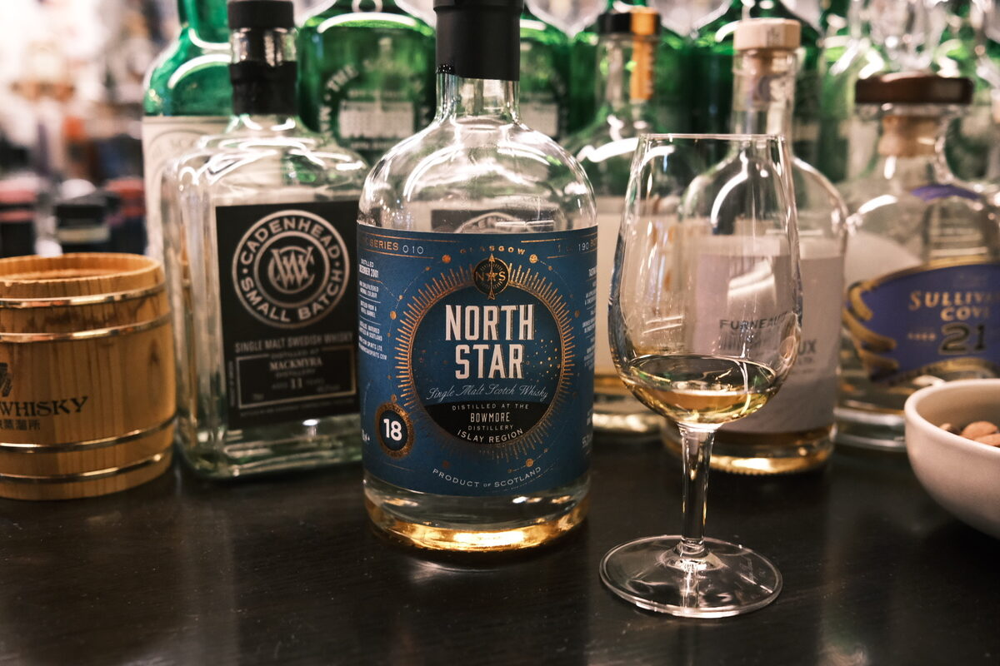

Bowmore 2001 North Star 18 years 55.2% (refill barrel)
Series 10. No surprises, but the line of stellar Bowmores continues. In the case of North Star, I think they call that nominative determinism? Anyway…
Colour Gold.
Nose Vegetal, woody, incensed, perfumed peat. Rosewater and pomegranates. Classic. Fresh cherries, lychees and orange peels. Sandalwood, incense. Toffee apples, pears. Nutty – hazelnuts, macadamias. Raisins and sultanas (interesting). Scented candles and mangoes. With water, caramel and scotch fingers. Malty.
Palate Incensed, sandalwoody caramel. Tropical fruit flavoured wood. Finesse, if you could taste it. Perfumed, some Armagnac! Dark chocolate and fruit mince tarts (again… this is refill). Apple juice – great fruity acidity. Vegetal peat, though the quite elegant Bowmore style. With water, malty, more caramel.
Finish Extremely long and warming. Dark chocolate, rum and raisin. Boozy. Rosewater and incense. Vanilla custard, fruit jams… bombolone! Chocolatey smoke, earthy peat. With water, cloves and a splash of red wine.
Comments Pretty mental. 92/100.

Posted by Dominic on 14 Jun 2021